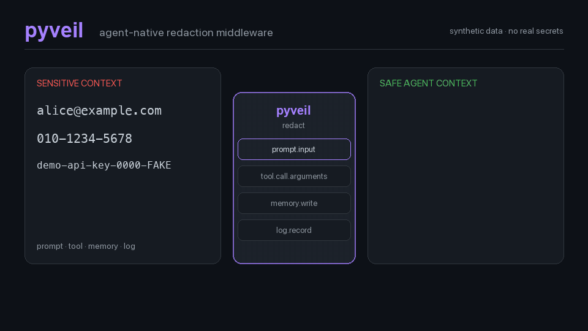

See exactly what the model receives
from pyveil import Channel, Veil
veil = Veil.high(
secret=b"tenant-secret",
scope="tenant/session",
)
safe = veil.redact_data(
messages,
channel=Channel.PROMPT_INPUT,
)
response = call_llm(safe.data)Email alice@example.com
API key sk-proj-...
-> pyveil
Email [EMAIL:a3d2b564c825]
API key [API_KEY:38ded98a17e7]Recipes people actually need
LLM client wrapper
Redact OpenAI, Azure OpenAI, Anthropic, Gemini, LiteLLM, or internal gateway messages before provider calls.
Read →Known names and domain IDs
Redact values your application already knows plus narrow customer, account, or project identifier patterns.
Read →Tool-call guard
Block auth headers, API keys, JWTs, private keys, and query secrets before model-controlled tools execute.
Read →MCP resource wrapper
Redact files, records, logs, and API payloads before returning MCP resource content to an agent.
Read →Memory write filter
Redact sensitive values before embedding and persisting long-lived agent memory.
Read →Logging filter
Attach a standard logging filter so records are redacted before handlers and external sinks.
Read →CLI preflight
Scan or redact files in local scripts and CI without adding runtime dependencies to your application.
Read →Demo
The package keeps core behavior local, deterministic, and small: no network calls, no unmasking API, no third-party core dependency.
